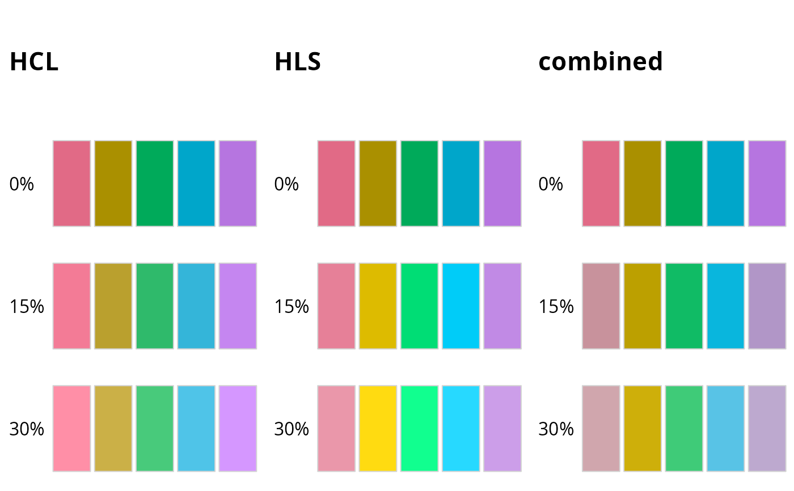
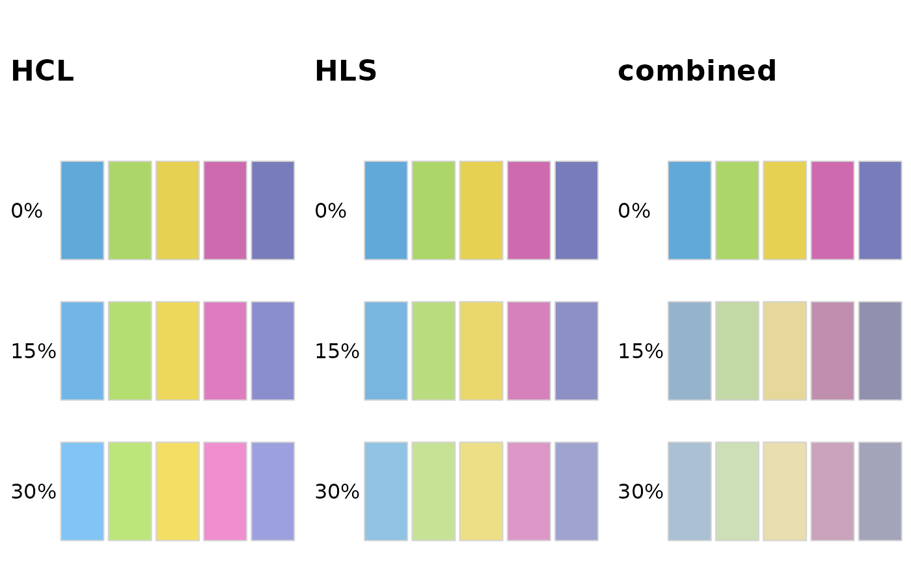
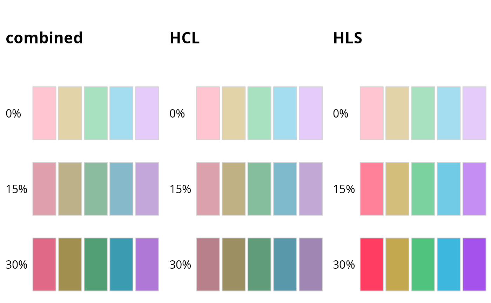
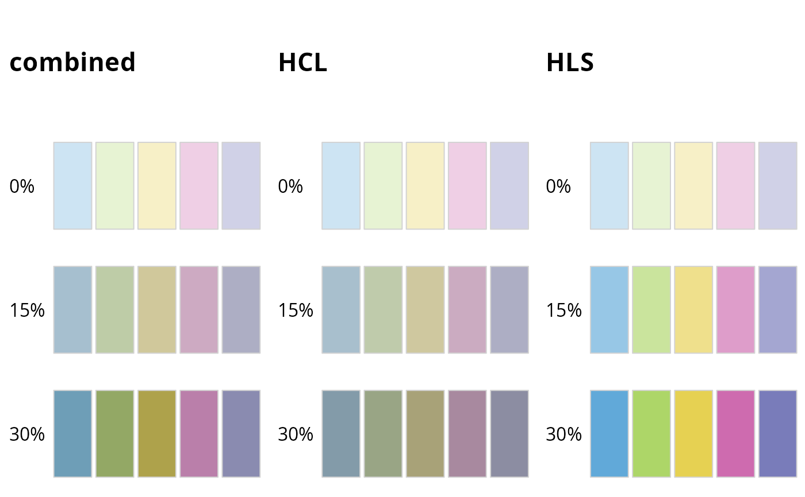

lighten.RdThe functions lighten and darken take a vector of R colors and adjust the colors such that
they appear lightened or darkened, respectively.
vector of any of the three kind of R colors, i.e., either a color
name (an element of colors), a hexadecimal string
of the form "#rrggbb" or "#rrggbbaa" (see
rgb), or an integer i meaning
palette()[i].
numeric specifying the amount of lightening. This is applied either
multiplicatively or additively to the luminance value, depending on the
setting of method (either relative or absolute). Negative numbers
cause darkening.
character string specifying the adjustment method. Can be either "relative" or "absolute".
character string specifying the color space in which adjustment happens. Can be either "HLS" or "HCL".
logical If set to TRUE, colors that fall outside of the RGB color gamut are slightly modified
by translating individual primary values so they lie between 0 and 255. If set to FALSE, out-of-gamut colors
are replaced by NA.
Other parameters handed to the function lighten().
A character vector with (s)RGB codings of the colors in the palette.
The color adjustment can be calculated in three different color spaces.
If space = "HCL", the colors are transformed to HCL, (polarLUV),
the luminance component L is adjusted, and then the colors are transformed back to a hexadecimal
RGB string.
If space = "HLS", the colors are transformed to HLS, the lightness component L is adjusted,
and then the color is transformed back to a hexadecimal RGB string.
If space = "combined", the colors are first adjusted in both the HCL and HLS spaces. Then,
the adjusted HLS colors are converted into HCL, and then the chroma components of the adjusted HLS
colors are copied to the adjusted HCL colors. Thus, in effect, the combined model adjusts luminance
in HCL space but chroma in HLS space.
We have found that typically space = "HCL" performs best for lightening colors and space = "combined"
performs best for darkening colors, and these are the default settings for lighten and darken,
respectively.
Regardless of the chosen color space, the adjustment of the L component can occur by two methods, relative
(the default) and absolute. Under the absolute method, the adjustment is L +/- 100 * amount when
lightening/darkening colors. Under the relative method, the adjustment is 100 - (100 - L) * (1 - amount) when
lightening colors and L * (1 - amount) when darkening colors.
Programmatically lightening and darkening colors can yield unexpected results (see examples). In HCL space,
colors can become either too gray or overly colorful. By contrast, in HLS space it can happen that the
overall amount of lightening or darkening appears to be non-uniform among a group of colors that are
lightened or darkened jointly, and again, colors can become either too gray or overly colorful. We
recommend to try different color spaces if the default space for the chosen function (lighten
or darken) does not look right in a specific application.
Zeileis A, Fisher JC, Hornik K, Ihaka R, McWhite CD, Murrell P, Stauffer R, Wilke CO (2020). “colorspace: A Toolbox for Manipulating and Assessing Colors and Palettes.” Journal of Statistical Software, 96(1), 1--49. doi:10.18637/jss.v096.i01
# lighten dark colors, example 1
cl <- qualitative_hcl(5)
swatchplot(list(
HCL = rbind("0%" = cl,
"15%" = lighten(cl, 0.15),
"30%" = lighten(cl, 0.3)),
HLS = rbind("0%" = cl,
"15%" = lighten(cl, 0.15, space = "HLS"),
"30%" = lighten(cl, 0.3, space = "HLS")),
combined = rbind("0%" = cl,
"15%" = lighten(cl, 0.15, space = "combined"),
"30%" = lighten(cl, 0.3, space = "combined"))),
nrow = 4, line = 2.5
)

# lighten dark colors, example 2
cl <- c("#61A9D9", "#ADD668", "#E6D152", "#CE6BAF", "#797CBA")
swatchplot(list(
HCL = rbind("0%" = cl,
"15%" = lighten(cl, 0.15),
"30%" = lighten(cl, 0.3)),
HLS = rbind("0%" = cl,
"15%" = lighten(cl, 0.15, space = "HLS"),
"30%" = lighten(cl, 0.3, space = "HLS")),
combined = rbind("0%" = cl,
"15%" = lighten(cl, 0.15, space = "combined"),
"30%" = lighten(cl, 0.3, space = "combined"))),
nrow = 4, line = 2.5
)

# darken light colors, example 1
cl <- qualitative_hcl(5, "Pastel 1")
swatchplot(list(
combined = rbind("0%" = cl,
"15%" = darken(cl, 0.15),
"30%" = darken(cl, 0.3)),
HCL = rbind("0%" = cl,
"15%" = darken(cl, 0.15, space = "HCL"),
"30%" = darken(cl, 0.3, space = "HCL")),
HLS = rbind("0%" = cl,
"15%" = darken(cl, 0.15, space = "HLS"),
"30%" = darken(cl, 0.3, space = "HLS"))),
nrow = 4, line = 2.5
)

# darken light colors, example 2
cl <- c("#CDE4F3","#E7F3D3","#F7F0C7","#EFCFE5","#D0D1E7")
swatchplot(list(
combined = rbind("0%" = cl,
"15%" = darken(cl, 0.15),
"30%" = darken(cl, 0.3)),
HCL = rbind("0%" = cl,
"15%" = darken(cl, 0.15, space = "HCL"),
"30%" = darken(cl, 0.3, space = "HCL")),
HLS = rbind("0%" = cl,
"15%" = darken(cl, 0.15, space = "HLS"),
"30%" = darken(cl, 0.3, space = "HLS"))),
nrow = 4, line = 2.5
)
